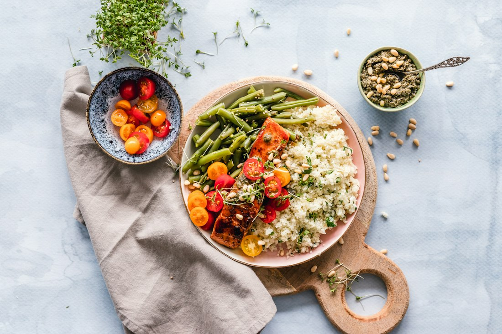
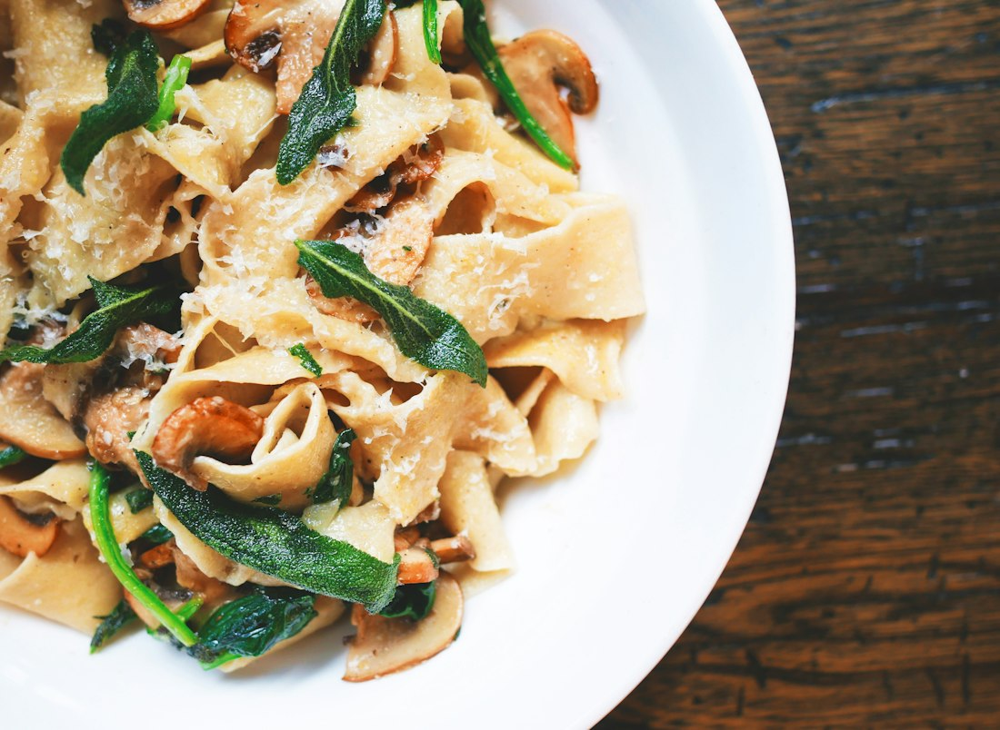
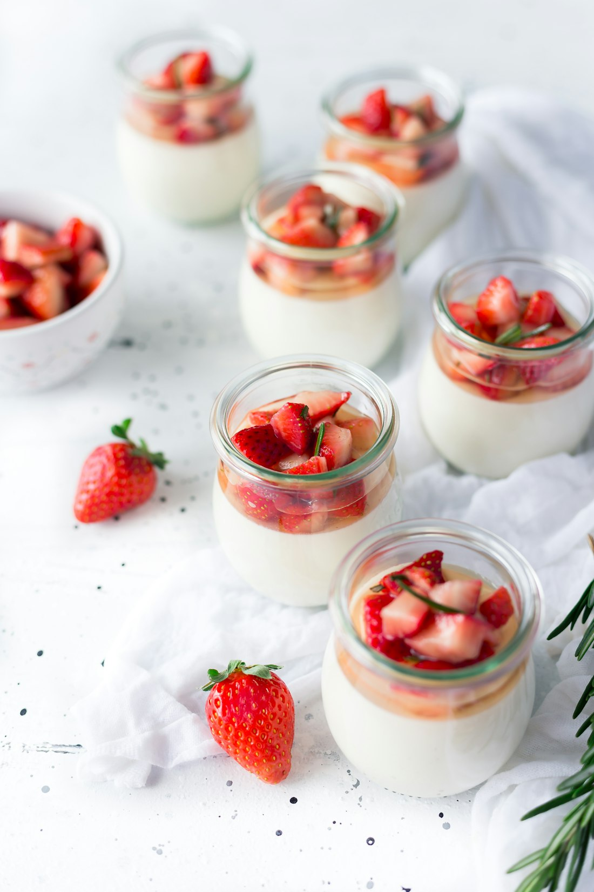

Insalata di stagione
Blattsalate, saisonales Gemüse und Zitronendressing.
Vegetarisches Beispiel12,50 €
CUCINA · CONVERSAZIONE · MOMENTI
Lange Abende. Gute Gespräche. Eine Küche, die mit wenigen Zutaten viel erzählt. Nehmen Sie gedanklich Platz in unserer mediterranen Restaurantwelt.
 Illustratives Bild · fiktives Betriebskonzept
Illustratives Bild · fiktives BetriebskonzeptENTDECKEN / DIREKT AUSPROBIEREN
Entdecken Sie die illustrative Speisekarte. Filter zeigen Gänge und vegetarische Gerichte. Beispielpreise, keine bestellbaren Speisen.
6 Beispielgerichte

Blattsalate, saisonales Gemüse und Zitronendressing.

Burrata, Tomaten und Basilikum als mediterraner Auftakt.
Pasta mit Zitrone, Parmesan und einem Hauch Kräutern.
Illustratives Tagesgericht mit Gemüse und Kräutern.

Ein süßer Abschluss mit saisonaler Frucht.
Eine cremige Dessertidee mit frischer Zitrusnote.
Alle Preise inklusive angenommener Umsatzsteuer als reine Gestaltungsbeispiele. Bilder sind illustrativ. Verbindliche Zutaten-, Allergen- und Preisangaben müsste ein tatsächlicher Betrieb vor Veröffentlichung ergänzen.
Interaktives Gestaltungsbeispiel von peters webdesign. Die Auswahl bleibt nur auf dieser geöffneten Seite; es erfolgt keine Buchung oder Übermittlung.
DAS KONZEPT / CASA LIMONE
CASA LIMONE ist ein fiktives Restaurantkonzept zwischen mediterraner Leichtigkeit und einem langen Abend am Tisch. Die Idee: Gerichte, die saisonale Zutaten in den Mittelpunkt stellen, und ein Auftritt, der Vorfreude weckt.
Die digitale Speisekarte lässt sich nach Gängen und vegetarischen Gerichten filtern. Alle Gerichte und Preise sind reine Beispiele. Es gibt an diesem Ort kein reales Restaurant und keine tatsächliche Reservierungsannahme.
LEISTUNGEN / RESTAURANT
Ein vollständiger Überblick über das fiktive Leistungsangebot von CASA LIMONE. Wählen Sie ein Thema und probieren Sie den passenden Weg zur Anfrage aus.
Für ein Abendessen zu zweit, Gespräche mit Freunden oder eine kleine Auszeit. Die Atmosphäre gehört genauso zum Konzept wie das Essen.
Im Formular auswählen ↗Die Beispielkarte setzt auf überschaubare Auswahl und wechselnde Zutaten. Ein echter Betrieb würde Verfügbarkeit und Allergene verbindlich ausweisen.
Im Formular auswählen ↗Geburtstag, Familienrunde oder Teamabend: Eine Anfrage kann Anlass, Personenzahl und Terminwunsch übersichtlich zusammenführen.
Im Formular auswählen ↗Ein guter Start, ein passendes Getränk und Zeit für den letzten Gang. Die Restaurantwelt erzählt auch die Momente zwischen den Gerichten.
Im Formular auswählen ↗DER ABLAUF / SCHRITT FÜR SCHRITT
So könnte der Ablauf in diesem Betriebskonzept aussehen. Die Schritte sind beispielhaft und kein tatsächliches Leistungsversprechen.
Entdecken Sie die Gerichte und stellen Sie sich Ihren Abend zusammen.
Ein Formular sammelt Termin, Personenanzahl und Anlass übersichtlich.
Bei einem echten Restaurant wäre erst die ausdrückliche Rückmeldung eine Reservierungsbestätigung.
GUT ZU WISSEN
Ein transparenter Überblick über das Beispiel und seine Funktionen.
Die Beispielkarte enthält vegetarisch gekennzeichnete Gerichte. In einem echten Restaurant müssen Zutaten und Allergene direkt mit dem Betrieb geklärt werden.
Nein. Die Demo nimmt keine Reservierungen entgegen. Auch bei einem realen Betrieb wäre die Annahme gesondert zu bestätigen.
Das Formular zeigt beispielhaft, wie Anlass und Personenanzahl erfasst werden können. Eine echte Veranstaltung wird damit nicht gebucht.
KONTAKT / DAS FORMULAR ERLEBEN
Die Reservierungsanfrage ist eine Formular-Demo. Es wird kein Tisch reserviert.